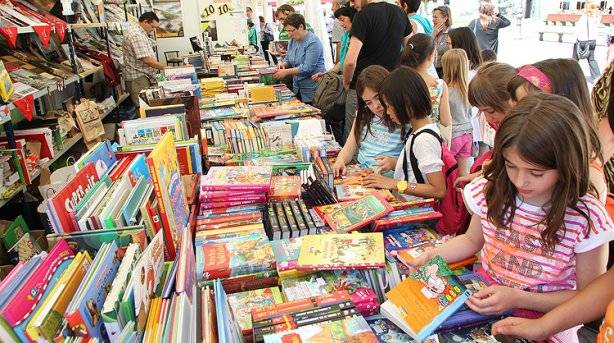
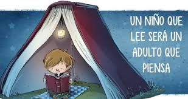

| La feria del libro | Viernes, 29 de abril, 23:00 | |||||
|---|---|---|---|---|---|---|
|  | Uno de los debates que surge es que, en ocasiones, la potencia de ventas que se sucede en la Feria no representa la situación del sector editorial. Entonces, ¿para qué sirve la Feria del Libro? Una feria del libro es un evento cultural que constituye un punto de encuentro entre la oferta (prestadores de productos editoriales) y la demanda (lectores-compradores). La Feria del Libro tiene un ojo puesto en la demanda del sector y otro puesto en el lector. Es una gran ocasión para vender libros y generar lectores. Es un punto de encuentro en un municipio, región o país, pudiendo incluso romper las fronteras y acercarse a nuevos posibles demandantes a nivel internacional. Sirve como creadora de hábitos de lectura. La Feria es grande y tiene un poder de atracción para personas que a veces no son lectores… y los convierte. Así que la Feria atrae a lectores y a compradores y a su vez ayuda al mundo editorial a crecer por medio de las ventas, del show que se arma alrededor de los invitados y de la fetichización del libro. El objetivo es siempre vender más libros, pero no es el único. Hay distintos tipos de Feria, pero todas tiene | |||||
| Ubicación: Librería juanito | Más información | |||||
| Desde niños | Miércoles, 1 de septiembre, 4:30 | ||||||
|---|---|---|---|---|---|---|---|
|  | Una forma entretenida y amena de educar a los niños es a través de la lectura de cuentos y libros. Es muy importante inculcar a los más pequeños el hábito de la lectura, ya que leer aporta innumerables beneficios al desarrollo de toda persona. La lectura ayuda a los niños a desarrollar su imaginación y a aprender sobre el mundo que les rodea; además, mejora su vocabulario, su riqueza lingüística, su memoria y su concentración, lo que contribuye a una mayor agilidad mental y al aumento de su cultura, beneficiándolos académicamente. También, les permite aprender a expresar mejor sus ideas y sentimientos, generando una mayor empatía, al comprender mejor a las otras personas y ser más tolerantes. La discusión sobre qué tanto o para qué le sirve la lectura al niño es añeja, y son muchas las respuestas. Hay quienes no le dan valor alguno, y hay otros que la consideran la gran solución, la panacea, y que incluso piensan que quien lee será mejor persona. Lo cierto es que los beneficios de la lectura son personales porque cada ser humano es individual e irrepetible, y lo que a uno beneficie o perjudique de cierta manera al otro, seguramente, le causará efectos muy distintos. Así pues, no hay recetas ni reglas escritas. | ||||||
| Libro infantil | Más información | ||||||